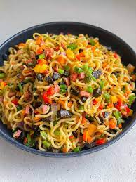

Noodles Recipes

Description:
Everyone loves Noodles, but do you know why? Well, because you enjoy eating noodles however you make it.
The noodles above was not just made, it was made with alot of healthy ingredients with the most important ingredient being LOVE!
Ingredients:
- Raw noodles (Main)
- Oil
- Carrot
- Tomatoes
- Green Pepper
- Scotch Pepper
- Yellow Pepper
- Liver
- Sausage
- LOVE
Steps:
- Start by cutting your veggies into a preferred chunk size.
- Cut the proteins into preferred size.
- Put the raw noodles into a boiling water and go in with the noodles seasoning just to taste.
- When parboiled, seive out.
- Fry all your cut ingredients gently and add your parpoiled noodles.
- Finally, add love!
It is ready to be served. Serve with any drink of your choice. Enjoy!